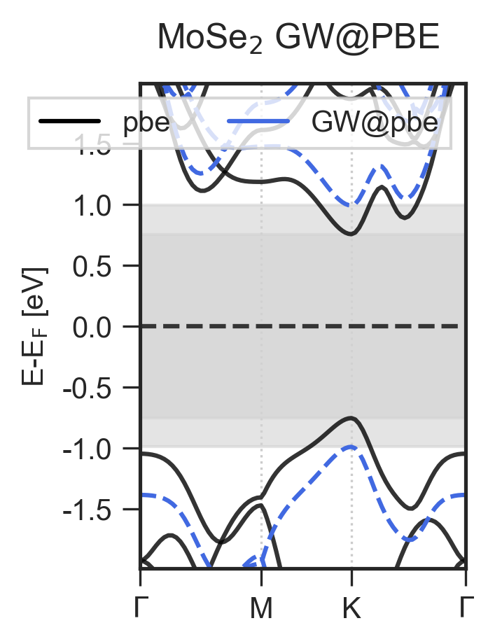

multiplots module¶
Created on Sat Oct 12 09:12:57 2019
@author: roman
-
multiplots.combine_bs_dos(BSpath, DOSpath, title='', fix_energy_limits=[])[source]¶ Combines a band structure plot and densities of states plot.
Automatically detects whether BSpath contains SOC information. If yes, overlay_ZORA_SOC() is invoked.
Example
>>> from AIMS_tools import multiplots >>> import matplotlib.pyplot as plt >>> import numpy as np >>> combi = multiplots.combine_bs_dos("band_structure_outputfile", "dos_outputfile") >>> plt.show() >>> plt.savefig("Name.png", dpi=300, transparent=False, bbox_inches="tight", facecolor="white")

- Parameters
BSpath (str) – Path to band structure calculation output file.
DOSpath (str) – Path to density of states calculation output file.
title (str, optional) – Ttile of the plot
fix_energy_limits (list, optional) – List of lower and upper energy limits to show. Defaults to [].
- Returns
figure – matplotlib figure object
-
multiplots.overlay_ZORA_SOC(BSpath, fig=None, axes=None, title='', ZORA_color='black', SOC_color='crimson', var_energy_limits=1.0, fix_energy_limits=[], zorakwargs={'alpha': 0.8}, sockwargs={'linestyle': '--'})[source]¶ Overlays a bandstructure plot with ZORA and SOC.
Example
>>> from AIMS_tools import multiplots >>> import matplotlib.pyplot as plt >>> import numpy as np >>> combi = multiplots.overlay_ZORA_SOC("outputfile") >>> plt.show() >>> plt.savefig("Name.png", dpi=300, transparent=False, bbox_inches="tight", facecolor="white")

- Parameters
BSpath (str) – Path to band structure calculation output file.
fig (matplotlib figure) – Figure to draw the plot on.
axes (matplotlib axes) – Axes to draw the plot on.
title (str, optional) – Title of plot. Defaults to “”.
ZORA_color (str, optional) – Color of ZORA lines. Defaults to “gray”.
SOC_color (str, optional) – Color of SOC lines. Defaults to “crimson”.
var_energy_limits (float, optional) – Variable energy range above and below the band gap to show. Defaults to 1.0.
fix_energy_limits (list, optional) – List of lower and upper energy limits to show. Defaults to [].
**zorakwargs (dict, optional) – zorakwargs are passed to the ZORA.plot() function. Defaults to {“alpha”:0.8}.
**sockwargs (dict, optional) – sockwargs are passed to the SOC.plot() function. Defaults to {“linestyle”: “–”}.
- Returns
axes – matplotlib axes object
-
multiplots.overlay_noGW_GW(noGWpath, GWpath, fig=None, axes=None, title='', noGW_color='black', GW_color='royalblue', var_energy_limits=1.0, fix_energy_limits=[], noGWkwargs={'alpha': 0.8}, GWkwargs={'linestyle': '--'})[source]¶ Overlays a bandstructure plot with GW and without GW.
Example
>>> from AIMS_tools import multiplots >>> import matplotlib.pyplot as plt >>> import numpy as np >>> combi = multiplots.overlay_noGW_GW("noGW_outputfile", "GW_outputfile") >>> plt.show() >>> plt.savefig("Name.png", dpi=300, transparent=False, bbox_inches="tight", facecolor="white")
- Parameters
noGWpath (str) – Path to band structure calculation output file.
GWpath (str) – Path to GW band structure calculation output file.
fig (matplotlib figure) – Figure to draw the plot on.
axes (matplotlib axes) – Axes to draw the plot on.
title (str, optional) – Title of plot. Defaults to “”.
noGW_color (str, optional) – Color of band structure lines. Defaults to “gray”.
GW_color (str, optional) – Color of GW lines. Defaults to “royalblue”.
var_energy_limits (float, optional) – Variable energy range above and below the band gap to show. Defaults to 1.0.
fix_energy_limits (list, optional) – List of lower and upper energy limits to show. Defaults to [].
**noGWkwargs (dict, optional) – noGWkwargs are passed to the noGW.plot() function. Defaults to {“alpha”:0.8}.
**GWkwargs (dict, optional) – GWkwargs are passed to the GW.plot() function. Defaults to {“linestyle”: “–”}.
- Returns
axes – matplotlib axes object
{kind=link}